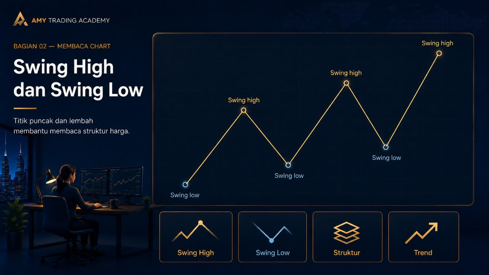
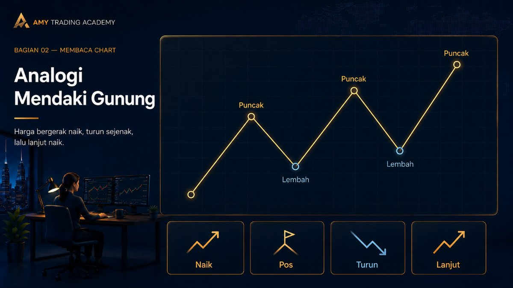
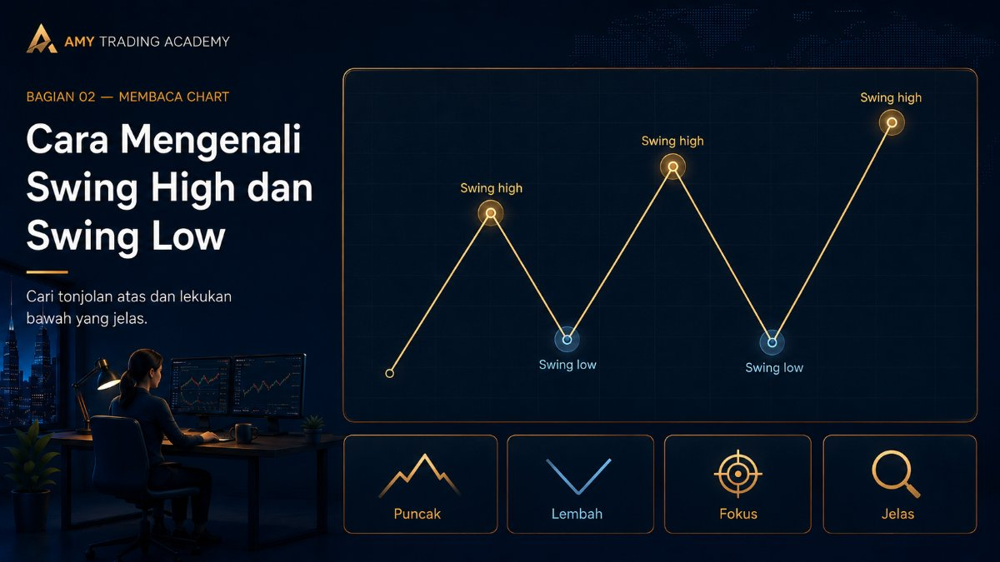
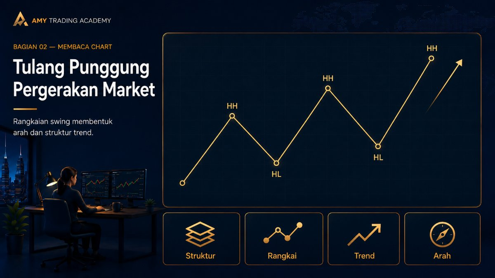

Swing High dan Swing Low

Kalau kamu perhatikan baik-baik, harga di pasar itu tidak pernah bergerak dalam satu garis lurus yang mulus seperti roket. Harga lebih mirip seperti gelombang lautan, atau seperti orang yang sedang kelelahan mendaki tangga: naik beberapa langkah, berhenti, mundur sedikit untuk ambil napas, lalu naik lagi.
Titik-titik tempat harga "berhenti dan berbalik arah" inilah yang kita sebut sebagai Swing High (Puncak) dan Swing Low (Lembah). Memahami dua titik ini adalah syarat mutlak sebelum kamu bisa membaca arah trend yang benar.
Analogi Mendaki Gunung

Bayangkan kamu sedang mendaki sebuah gunung tinggi. Tentu kamu nggak mungkin berjalan terus-terusan dari bawah sampai ke puncak tanpa berhenti, kan?
Kamu akan mendaki naik cukup jauh (membentuk gelombang pertama). Saat mulai ngos-ngosan, kamu akan berhenti di sebuah pos (inilah Swing High). Dari pos itu, kadang kamu harus jalan menurun sedikit ke lembah terdekat untuk mencari sumber air (inilah Swing Low). Setelah tenaga pulih, barulah kamu mendaki lagi menembus rute yang lebih tinggi dari pos sebelumnya.
Chart trading beroperasi persis seperti itu. Swing High adalah titik harga berhenti naik dan mulai turun. Swing Low adalah titik harga berhenti turun dan mulai naik. Rangkaian jejak "pos istirahat" inilah yang membentuk sebuah jalur pendakian (trend).
Cara Mengenali Swing High dan Swing Low

Lalu, bagaimana cara memastikan bahwa sebuah titik itu benar-benar Swing High atau Swing Low, bukan sekadar riak-riak kecil yang menipu mata? Secara teknikal, kita menggunakan aturan tiga candle (3-candle formation):
1. Syarat Swing High (Puncak)
Sebuah titik bisa sah disebut Swing High jika memenuhi syarat formasi tiga candle berikut:
- Ada satu candle di tengah yang sumbu atasnya (High-nya) menjulang paling tinggi.
- Candle di sebelah kirinya memiliki High yang lebih rendah.
- Candle di sebelah kanannya juga memiliki High yang lebih rendah.
Bentuknya menyerupai huruf "A" atau sebuah atap rumah.
2. Syarat Swing Low (Lembah)
Sebuah titik bisa sah disebut Swing Low jika memenuhi syarat sebaliknya:
- Ada satu candle di tengah yang sumbu bawahnya (Low-nya) menjorok paling dalam (paling rendah).
- Candle di sebelah kirinya memiliki Low yang lebih tinggi (tidak sedalam yang tengah).
- Candle di sebelah kanannya juga memiliki Low yang lebih tinggi.
Bentuknya menyerupai huruf "V" atau sebuah mangkok.
Tips Visual: Tidak usah terlalu kaku menghafal formasinya. Kalau kamu zoom-out sedikit, mata kamu akan secara otomatis bisa mengenali tonjolan tajam di atas (Swing High) dan lekukan tajam di bawah (Swing Low). Semakin jelas terlihat lekukannya, semakin kuat status Swing tersebut.
Tulang Punggung Pergerakan Market

Kenapa kita repot-repot belajar mencari Swing High dan Swing Low? Karena kedua titik inilah yang menjadi tulang punggung atau pondasi utama pergerakan harga.
Perhatian: Banyak pemula gagal karena mereka menarik garis asal-asalan sembarangan di chart. Mereka menyambungkan titik yang bukan "Swing" sebenarnya.
Dengan mengenali mana Swing High yang sah dan mana Swing Low yang sah, kamu bisa menyambungkan titik-titik tersebut untuk melihat gambaran besar: "Oh, ternyata puncak-puncaknya makin lama makin tinggi!" atau "Oh, ternyata lembahnya makin lama makin curam ke bawah!"
Rangkaian puncak dan lembah inilah yang nantinya akan kita susun menjadi apa yang disebut dengan Trend. Dan itulah tepatnya yang akan kita pelajari di bab berikutnya. Siapkan dirimu, karena kita akan belajar merangkai titik-titik ini menjadi sebuah pola yang bisa menghasilkan cuan!